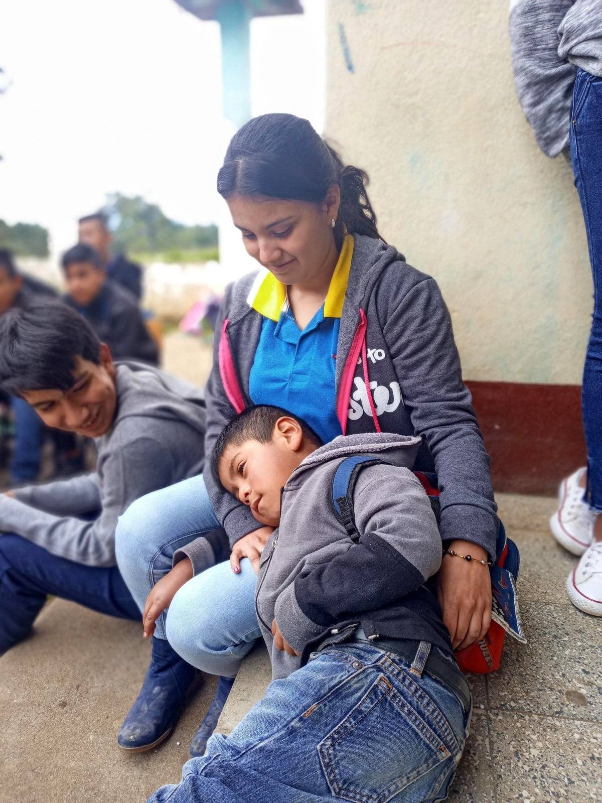

Salitre de Conejo, Momostenango
Jonathan: una oportunidad que transforma vidas
Con una computadora y contenidos sin internet, terminó por su cuenta los materiales de sexto grado en pocas semanas.
Leer la historiaTotonicapán, Guatemala· acompañando a la niñez del altiplano desde 1952

Una historia de fe, perseverancia y oportunidades que transforman vidas.
Para don Óscar y su esposa, ser padres ha significado mucho más que acompañar el crecimiento de sus hijos. Ha sido un camino de amor, sacrificios y esfuerzo constante para que Iñaki y Aragón, dos hermanos que necesitaban un acompañamiento distinto, tengan la oportunidad de aprender, desarrollarse y construir su propio futuro.
En 2019, convencidos de que sus hijos merecían las mismas oportunidades de crecer y alcanzar sus sueños, acudieron a GuateStar en busca de apoyo educativo. Ambos hermanos recibieron becas y comenzaron a participar en Club Extra.
Los primeros años estuvieron llenos de desafíos. GuateStar decidió adaptar su acompañamiento a sus necesidades y les asignó una facilitadora dedicada exclusivamente a trabajar con ellos. Con paciencia, atención personalizada y el compromiso inquebrantable de sus padres, los pequeños avances comenzaron a convertirse en grandes logros.
«La educación verdaderamente transformadora no consiste en exigir que todos aprendan de la misma manera, sino en ofrecer a cada persona el apoyo que necesita para desarrollar sus capacidades».GuateStar
Culminó tercero básico en 2025 y eligió estudiar odontología. En 2026 terminó su primer año de bachillerato con esa orientación y comienza a participar en jornadas de atención odontológica para personas de escasos recursos.
En 2026 completó segundo básico. Sueña con ser, como dice con entusiasmo, «un chef de pizza». Su camino podría continuar con una formación técnica en INTECAP.

Hoy los dos hermanos también participan como voluntarios en Club Extra y en Mentores, compartiendo con otros las oportunidades que han recibido. Detrás de cada uno de sus logros están las manos de sus padres, que nunca han dejado de acompañarlos, y la generosidad de quienes han creído en su potencial. Para la familia, la fe en Dios ha sido una fuente de fortaleza a lo largo de este recorrido.
Iñaki sueña con ser dentista. Aragón sueña con preparar pizzas. Dos caminos diferentes, igualmente dignos, unidos por el amor de sus padres.
Con $30 al mes, un niño tiene un mes completo de Club Extra: refuerzo académico, mentoría y materiales.
Salitre de Conejo, Momostenango
Con una computadora y contenidos sin internet, terminó por su cuenta los materiales de sexto grado en pocas semanas.
Leer la historia
El sacrificio de un padre
Don Eric trabaja cada día como sastre. Una beca en 2015 abrió el camino a sus cuatro hijos.
Leer la historia
San Andrés Xecul
Se abrieron 20 lugares para sexto primaria y el primer sábado llegaron más de 40 niños.
Leer la historia